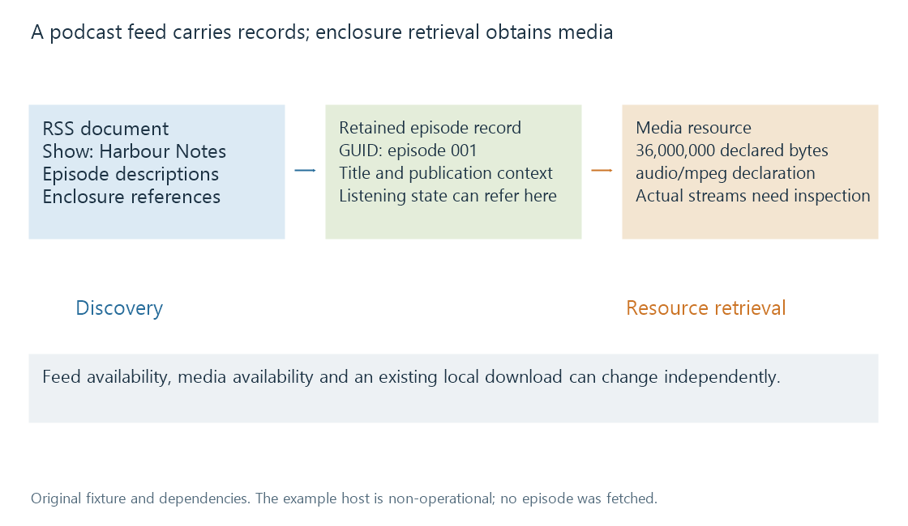

Podcast RSS feeds
A podcast RSS feed publishes show and episode metadata with media enclosure references that clients can discover separately from downloading or playing the media.
A podcast feed is a document that describes a show and its published episodes. It normally contains references to media rather than the media bytes themselves. A client reads the feed to discover an episode, then retrieves the referenced resource when it needs a download or playback.
RSS 2.0 supplies a general syndication structure. Podcast ecosystems add conventions and requirements around audio/video enclosures, artwork, episode roles and delivery.
A small original feed
This example uses a fictional show, episode and non-operational example host:
<?xml version="1.0" encoding="UTF-8"?>
<rss version="2.0">
<channel>
<title>Harbour Notes</title>
<link>https://example.invalid/harbour-notes</link>
<description>Conversations about journeys by water.</description>
<item>
<title>The First Crossing</title>
<description>A conversation with the harbour pilot.</description>
<guid isPermaLink="false">harbour-notes:episode:001</guid>
<pubDate>Sat, 10 Oct 2026 08:00:00 +0000</pubDate>
<enclosure
url="https://media.example.invalid/harbour-01.mp3"
length="36000000"
type="audio/mpeg" />
</item>
</channel>
</rss>
The channel fields describe the show. The item fields describe one episode. The enclosure points to that episode's media. There is no MP3 payload embedded in this XML.

The fixture demonstrates base RSS structure; it is not a submitted feed or a complete claim of compatibility with every podcast directory.
Three enclosure fields, three meanings
| Attribute in the example | Meaning |
|---|---|
| url | The media locator to retrieve |
| length | Declared size in bytes: 36,000,000 |
| type | Declared media type: audio/mpeg |
The length is not 36 million seconds or a playback duration. Dividing a byte size by an assumed bitrate can produce an estimate, but the feed's enclosure length alone does not establish the recording's timing.
Likewise, the MIME type is a declaration about the resource. A client can use it to choose handling, while technical inspection provides evidence about the actual bytes and streams.
The episode's web-page link, if supplied, has another role from its enclosure URL. A page describing the programme is not automatically the audio resource.
XML syntax and feed meaning
The example's element names are case-sensitive. Text characters that have XML syntax meaning must be represented appropriately: an ampersand in literal text needs an entity such as &.
A document can be well-formed XML while omitting required RSS channel information or declaring an enclosure that does not exist. XML parsing establishes syntax; RSS validation establishes document structure; media retrieval establishes another dependency.
Podcast-specific requirements add further distinctions. Apple Podcasts, for example, documents stable episode identifiers and enclosure/delivery requirements. Those requirements belong to that ecosystem; they are more specific than merely being able to parse RSS.
Additional namespaced elements can describe concepts that base RSS does not define. A namespace identifies their vocabulary. A reader that does not understand a particular extension cannot necessarily use its semantic detail just because the XML is well-formed.
Discovery and retrieval can fail independently
A feed can be readable while its media host is unavailable. Its episode description can remain visible while a download fails. Conversely, an existing local download can play while the publisher's current feed cannot be fetched.
A hosting or delivery change can also update the locator without creating a new episode identity. Episode identifiers explains why the media URL and GUID must not be treated as interchangeable fields.
For clients that seek or inspect remote resources, delivery behavior matters. Apple documents support for HEAD and byte-range requests in its podcast requirements. A server returning an episode's full bytes for ordinary download is not the same capability as serving an efficient requested byte range.
Those network operations do not alter the episode's story identity. They concern access to its current media representation.
Polling updates a published view
Reading a feed periodically reveals what the publisher currently exposes. It need not enumerate every episode ever published. A shortened feed can omit older records even when a client still has their downloads or history.
Updating a subscription therefore requires retaining identity and state beyond the current document when that is part of the client's intended model. Treating every omitted old item as proof that its local recording vanished confuses publication view with storage inventory.
An Emby scan of downloaded resources answers a storage/catalogue question. Polling the publisher's RSS answers a publication-discovery question. A workflow can connect them, but they do not become the same operation because both can reveal a new episode.
See Also
- Podcast series and episode organisation
- Podcast episode identifiers
- Technical analysis of library media
- Library scanning and catalogue reconciliation